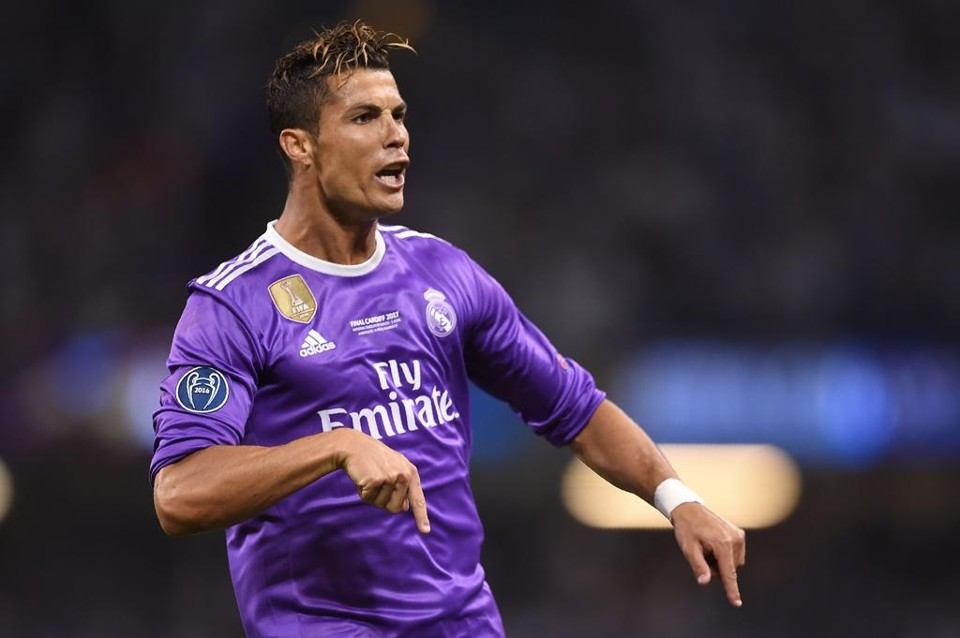
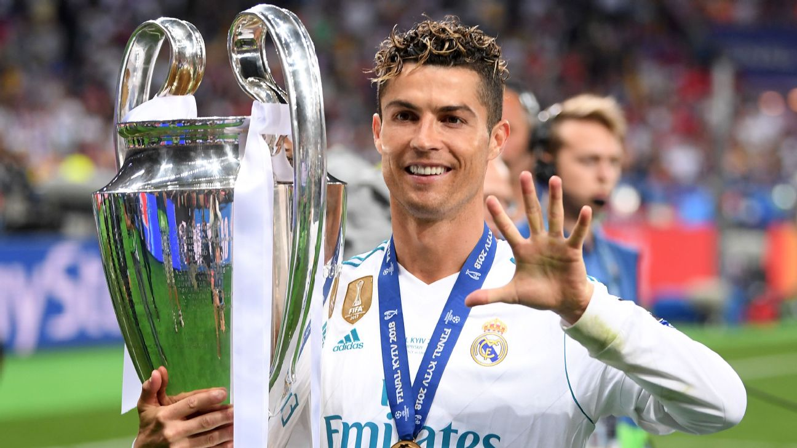
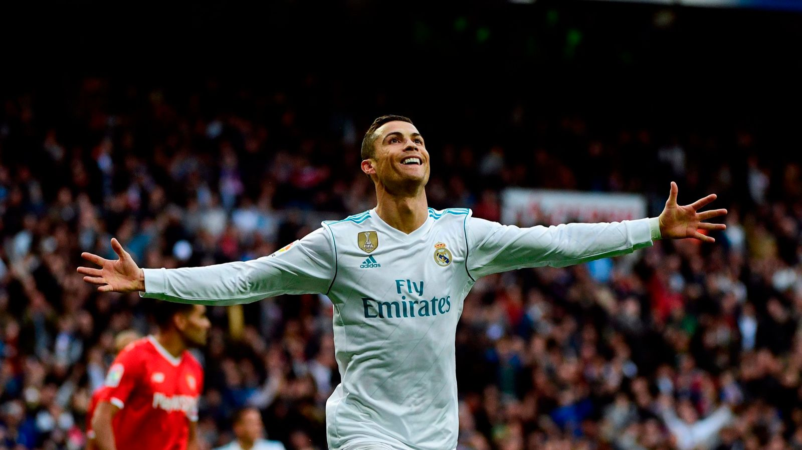
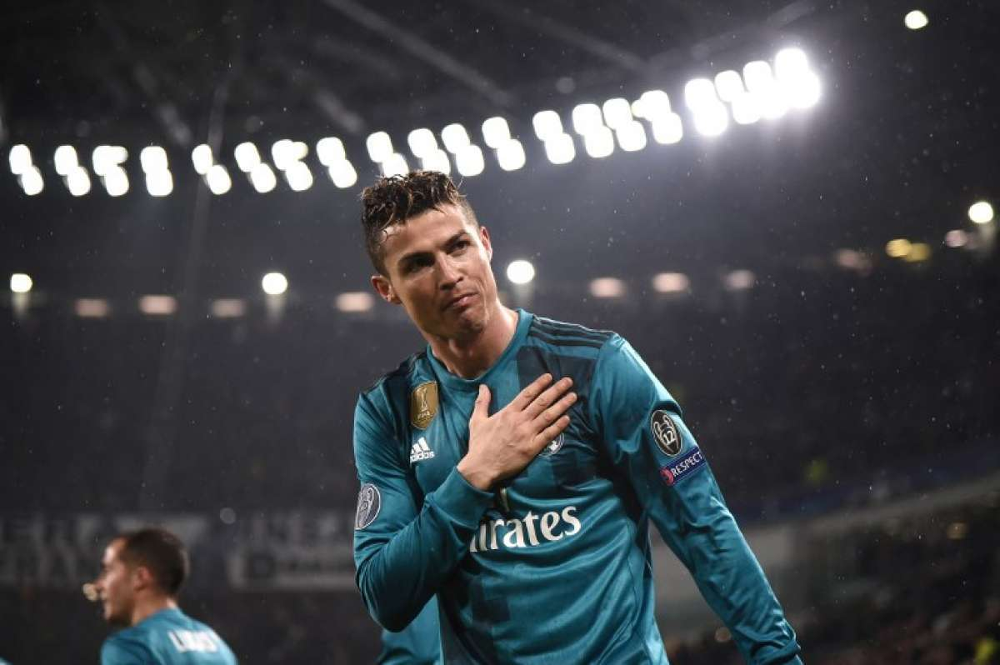

Cristiano Ronaldo viveu uma das fases mais brilhantes de sua carreira durante o período em que jogou pelo Real Madrid, entre 2009 e 2018. Contratado do Manchester United, ele rapidamente se tornou o principal astro do clube espanhol, conquistando o carinho da torcida e se firmando como um dos maiores jogadores da história do futebol mundial. Sua capacidade técnica, velocidade, força física e faro de gol fizeram dele uma peça fundamental para o sucesso do time merengue na última década.

Durante sua passagem pelo Real Madrid, Cristiano Ronaldo acumulou uma quantidade impressionante de títulos. Ele conquistou quatro vezes a UEFA Champions League (2014, 2016, 2017 e 2018), torneio mais prestigiado do futebol europeu e mundial, mostrando seu papel decisivo especialmente nas fases finais da competição. Além disso, ajudou o clube a vencer duas La Liga (2012-13 e 2016-17), consolidando a supremacia do Real na Espanha em diferentes temporadas.

Além desses títulos, Ronaldo também conquistou outras taças importantes, como duas Copas do Rei (2011 e 2014), três Supercopas da Espanha, três Supercopas da UEFA e quatro Mundiais de Clubes da FIFA com o Real Madrid. Sua incrível capacidade de marcar gols foi fundamental para essas conquistas, já que ele se tornou o maior artilheiro da história do clube, com mais de 450 gols em todas as competições. Esse recorde reforçou sua importância e legado no time.

Em suma, a passagem de Cristiano Ronaldo pelo Real Madrid não só elevou seu status como um dos maiores jogadores da história, mas também ajudou a escrever um dos capítulos mais vitoriosos do clube. Seus títulos e performances memoráveis fizeram dele uma lenda do futebol mundial, e o impacto que teve no Real Madrid é sentido até hoje, tanto pelos torcedores quanto pela história do esporte.

Elaborado por luis guilherme pavan